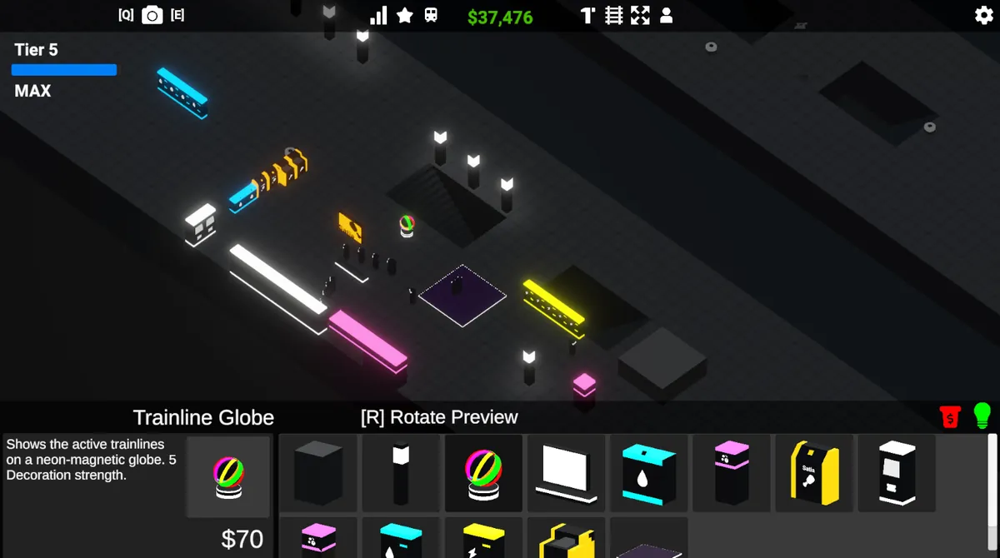
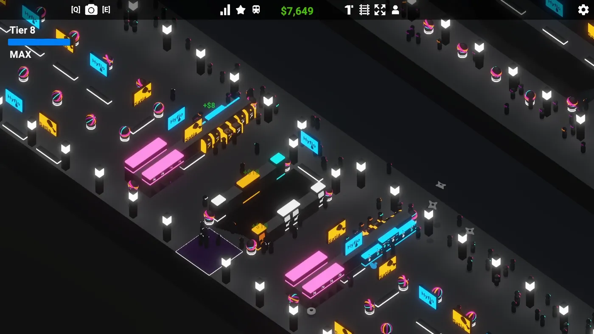
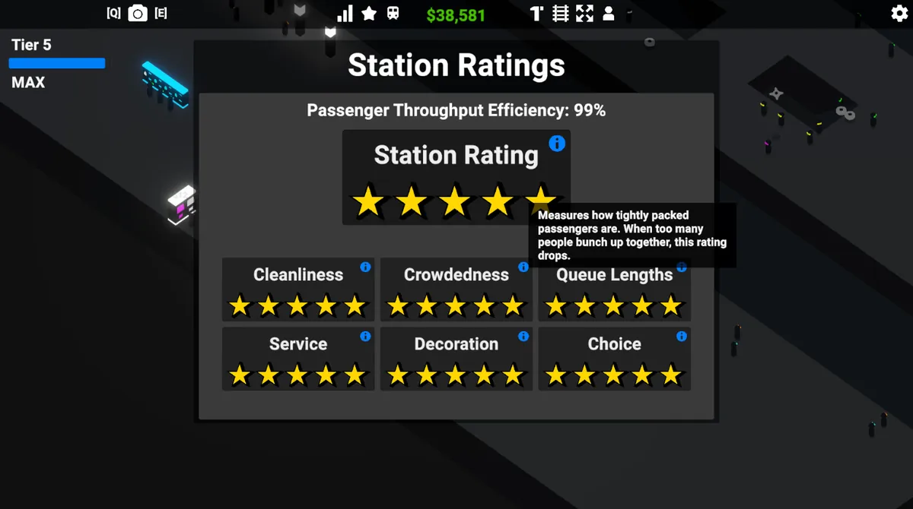
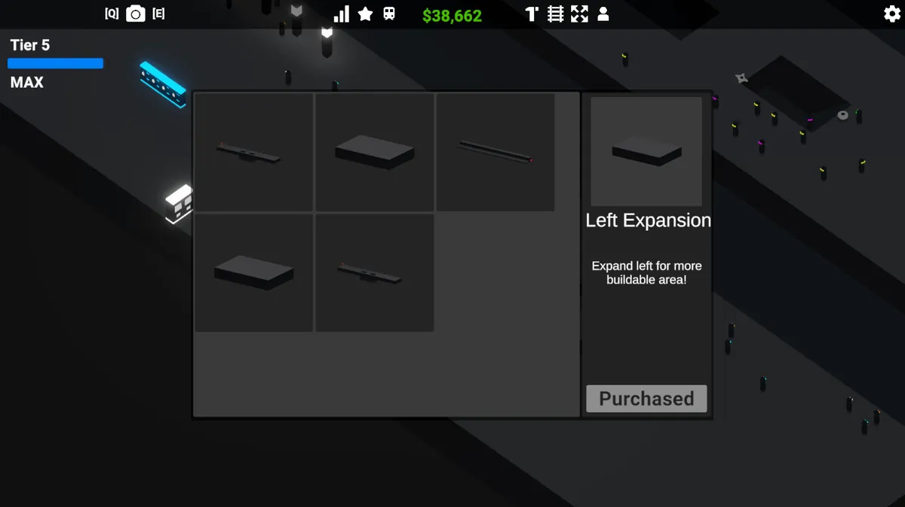
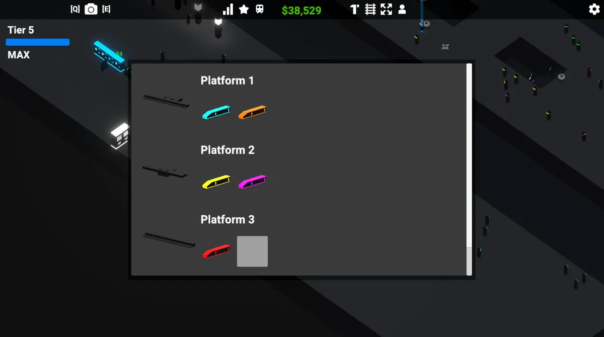
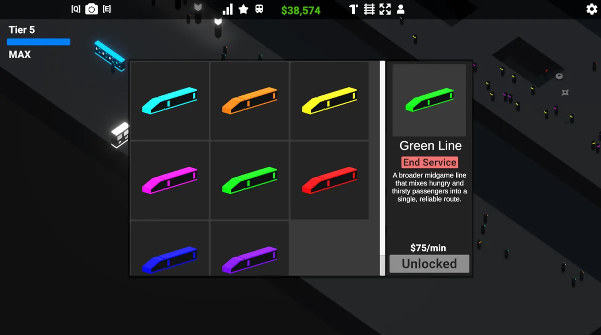
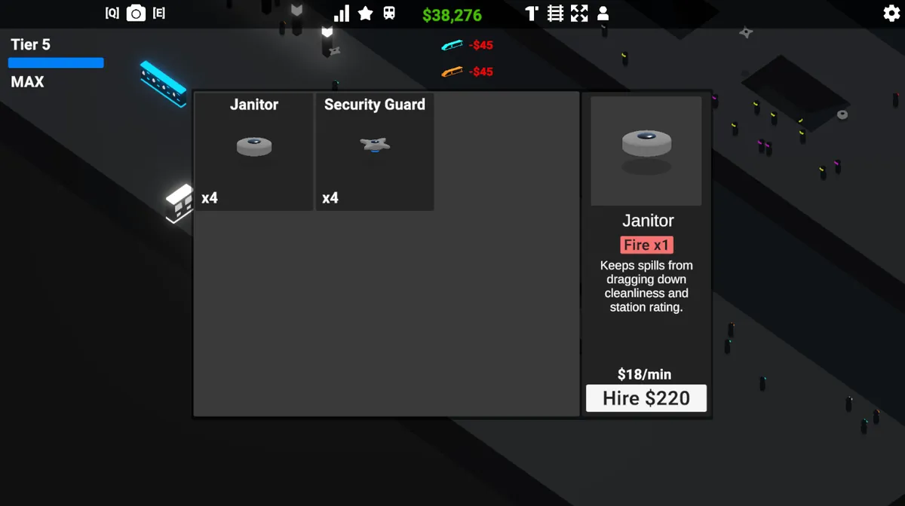
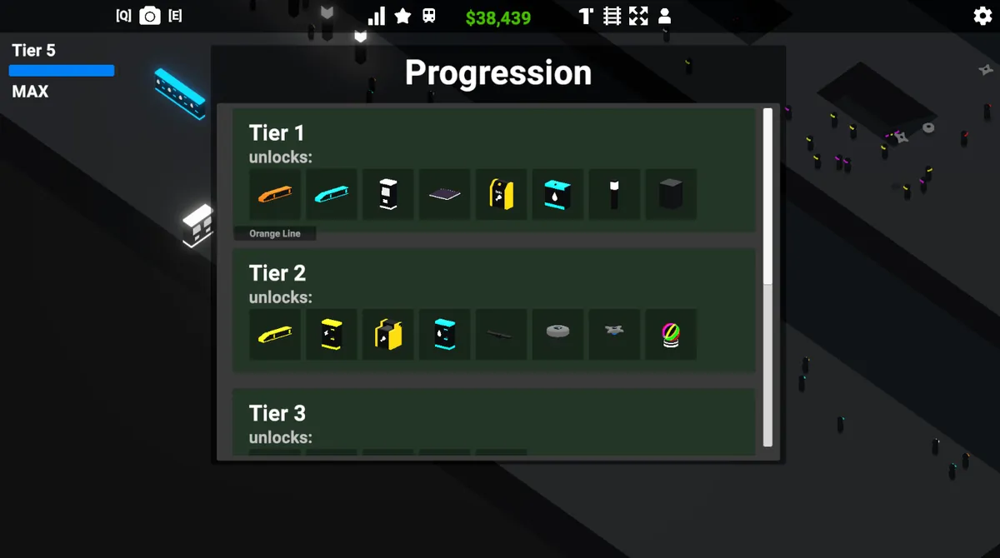

Case study · Final year project
Cyber Station
Best Games Programming & Development Artefact · ExpoTees 2026
A neon station management game about building a transport hub that can take the pressure: placement, passenger flow, ratings and progression all pulling against each other. I built it solo as the artefact for my final-year project at Teesside University, where it scored 90.
- RoleSolo developer
- EngineUnity 3D · C#
- Grade90 / 100
- AwardExpoTees 2026 winner
- Scale86 scripts · ~17k lines
Overview
One station, four systems in tension
In Cyber Station you design and operate a growing neon transport hub: lay out the concourse, keep crowds of passengers moving, and keep your star rating high enough to unlock the next tier. The game is built around four systems that constantly push against each other: placement, passenger flow, station ratings and progression. Every layout decision changes how passengers path through the space, which changes the ratings, which gates what you can build next.
Around that core sit the supporting systems that make it a complete game: train scheduling, staff coordination, an economy to balance, and saving and loading so a station survives between sessions.
Building
Placement & construction
Everything in the station is placed by the player. The build menu offers a catalogue of infrastructure and decoration, from ticket machines, barriers, platforms and trains to staff and cosmetic items, each with a cost and a stat effect on the station. Items can be rotated with a live preview before committing, so tight layouts stay readable.
Decorations aren't just cosmetic: each carries a decoration strength value that feeds directly into the station's Decoration rating, turning beautification into an economic decision like everything else.

Passengers
Passenger flow & AI navigation
Passengers are autonomous agents. They enter the station, navigate to ticket machines, queue, pass barriers and reach their platform in time for the next train, hundreds of them at once. Their routing reacts to the layout the player builds: a badly placed barrier or an undersized bank of ticket machines shows up immediately as bunching crowds and growing queues.
Rather than every passenger running its own per-frame update, the whole
crowd is driven from a single manager on a fixed 10 Hz
logic tick. Each passenger runs a two-level state machine:
a master state for where it is in its journey
(InStation, OnPlatform, OnTrain)
and a sub-state for what it is doing there
(Idle, MovingToTarget,
InteractingWithSomething). Splitting it that way means
"walking somewhere" is written once and reused, instead of once per
place a passenger can be walking.
When a passenger needs a facility it does not simply walk to the nearest one. It picks the option with the lowest estimated total delay, and the useful part is that both halves of that estimate are in the same unit. The queue wait is already seconds; the walk is turned into seconds by measuring the real NavMesh path, corner to corner, and dividing by that passenger's own speed. Adding them is then meaningful, where adding a distance to a queue length would not be, and it is why a nearer machine with six people at it correctly loses to a further one standing empty.
private StationFacility GetMostAccessibleFacility(List<StationFacility> facilities, Passenger passenger, float maxWaitTime, out float bestWait)
{
bestWait = Mathf.Infinity;
// ... null and empty guards ...
StationFacility bestFacility = null;
for (int i = 0; i < facilities.Count; i++)
{
StationFacility facility = facilities[i];
if (facility == null || !facility.CanAcceptPerson(passenger))
{
continue;
}
float estimatedWait = facility.GetEstimatedQueueWaitTime();
float estimatedWalkTime = EstimateWalkTimeToService(passenger, facility);
float totalEstimatedDelay = estimatedWait + estimatedWalkTime;
// Cross-platform facilities should stay viable; delay only affects ordering.
if (totalEstimatedDelay < bestWait)
{
bestWait = totalEstimatedDelay;
bestFacility = facility;
}
}
return bestFacility;
}
private float EstimateWalkTimeToService(Passenger passenger, QueuableObject target)
{
// ... resolve a reachable point on the mesh near the target ...
float routeDistance = EstimateRouteDistance(passenger.transform.position, routeDestination);
float walkSpeed = GetEstimatedWalkSpeed(passenger);
return routeDistance / walkSpeed;
}
private float EstimateRouteDistance(Vector3 startPosition, Vector3 destination)
{
if (facilityRoutePath != null &&
NavMesh.CalculatePath(startPosition, destination, NavMesh.AllAreas, facilityRoutePath) &&
facilityRoutePath.status == NavMeshPathStatus.PathComplete)
{
return GetPathLength(facilityRoutePath);
}
// No complete path: fall back to flat distance so the facility is ranked
// last rather than dropped.
Vector3 flatOffset = destination - startPosition;
flatOffset.y = 0f;
return flatOffset.magnitude;
}
Two details in there are deliberate. facilityRoutePath is a
single NavMeshPath reused for every query rather than a new
one per candidate, because this runs for every passenger that wants
something and allocating per candidate would hand the garbage collector
a steady drip of work. And when no complete path exists the estimate
falls back to flat distance rather than infinity, so an unreachable
facility sorts last instead of vanishing, which is what stops a
passenger freezing when the player walls something off mid-journey.


Navigation
Paying for the bake only when the floor changes
A management game where the player rearranges the world is a problem for
navigation, and the obvious answer, rebaking the mesh whenever anything
is placed, is the wrong one: BuildNavMesh() is a
synchronous full rebuild on the main thread, so doing it
per placement would hitch the game every time you put down a bin.
So there are two mechanisms, split by what actually changed. Placing a
ticket machine or a barrier does not change the walkable floor, it just
puts something on it, so those 22 buildable prefabs each carry a
NavMeshObstacle and carve the existing mesh
at runtime for free. The mesh is only genuinely rebuilt when the floor
itself grows, which is when the player buys a station expansion, so the
cost lands on a deliberate, occasional, already-celebratory action
instead of on every click.
The awkward part is what is standing on the floor at that moment.
Passengers and dropped litter are colliders too, and a bake would treat
a waiting crowd as permanent architecture, carving people-shaped holes
into the mesh they are about to walk on. So they are switched off for the
duration and switched back after. The try/finally
is the bit I would defend in review: if the bake ever throws, the station
still gets its passengers back rather than being left with a scene full
of invisible, collider-less people.
public void BuildNavMesh()
{
if (_navMeshManager != null)
{
List<ColliderState> litterColliders = DisableLitterCollidersForBake();
List<ColliderState> characterColliders = DisablePersonCollidersForBake();
List<RendererState> characterRenderers = DisablePersonRenderersForBake();
try
{
_navMeshManager.BuildNavMesh();
}
finally
{
RestoreRendererStates(characterRenderers);
RestoreColliderStates(characterColliders);
RestoreColliderStates(litterColliders);
}
}
else
{
Debug.LogError("Cannot build NavMesh because NavMeshSurface component is missing.");
}
}
Each helper records the previous enabled state rather than
blanket-enabling everything afterwards, so anything that was already
disabled for its own reasons, a passenger mid-despawn, litter queued for
cleanup, stays disabled. Restoring to true would have been
one line shorter and would have quietly resurrected objects the rest of
the game had finished with.
Ratings
The station-rating system
The whole station is graded live. An overall star rating is derived from six separate ratings (Cleanliness, Crowdedness, Queue Lengths, Service, Decoration and Choice) alongside a passenger throughput percentage. Each one watches a different behaviour: Crowdedness, for example, measures how tightly packed passengers get, so a station can be profitable and still bleed stars because people are bunching at a pinch point.
Two of those were renamed for the UI after the code was written, so
the excerpt below reads slightly differently: queueTimes
is Queue Lengths and passengerNeeds is Service.
This is the system that ties the game together, and it closes a loop: the six ratings are smoothed and rolled into an overall score, and that score feeds back into how many passengers spawn. A better station pulls in bigger crowds, which puts more pressure on the very layout that earned the rating in the first place.
The whole thing runs on a one second tick rather than per frame, and
every rating is eased toward its target with a Mathf.Lerp
rather than snapped. That smoothing is deliberate: raw targets jump
around as passengers move, and a star rating that flickers reads as a
bug rather than as feedback. Because the tick is fixed at 1 Hz,
Mathf.Lerp(current, target, 0.2f) is
exponential smoothing on a fixed step, not the
frame-rate dependent per-frame Lerp it resembles: the same station
settles at the same speed on a 30 FPS laptop and a 240 Hz
monitor.
void Update()
{
tickTimer += Time.deltaTime;
if (tickTimer >= 1f)
{
CalculateTargetsAndApply();
tickTimer -= 1f;
}
}
void CalculateTargetsAndApply()
{
List<Passenger> floorEligiblePassengers = GetFloorEligiblePassengers();
float targetCleanliness = GetCleanlinessTarget();
float targetCrowdedness = GetCrowdednessTarget(floorEligiblePassengers);
float targetQueueTimes = GetQueueTimesTarget();
float targetChoice = GetChoiceTarget();
float targetPassengerNeeds = GetPassengerNeedsTarget();
float targetDecoration = GetDecorationTarget(floorEligiblePassengers);
cleanlinessRating = Mathf.Lerp(cleanlinessRating, targetCleanliness, 0.2f);
crowdednessRating = Mathf.Lerp(crowdednessRating, targetCrowdedness, 0.2f);
queueTimesRating = Mathf.Lerp(queueTimesRating, targetQueueTimes, 0.2f);
choiceRating = Mathf.Lerp(choiceRating, targetChoice, 0.2f);
passengerNeedsRating = Mathf.Lerp(passengerNeedsRating, targetPassengerNeeds, 0.2f);
decorationRating = Mathf.Lerp(decorationRating, targetDecoration, 0.2f);
stationRating = (cleanlinessRating + crowdednessRating + queueTimesRating + passengerNeedsRating + choiceRating + decorationRating) / 6f;
}
Progression
Progression & expansion
Income and ratings feed a tier system that paces the game. Higher tiers unlock station expansions, extra platforms, new train lines and staff, each one raising passenger volume and putting fresh pressure back on the layout you've built.





Staff AI
Staff that dispatch themselves
Janitors and security drones do not each hunt for work independently, which would leave two janitors racing to the same piece of litter. Instead, each type has a coordinator. The workers ask it for a job, and the coordinator hands out the nearest unclaimed task and locks it, so nothing is ever double-assigned.
It keeps the behaviour clean and extensible: the coordinator owns the "who does what" decision while each worker just runs its own small state machine. Security even prioritises chasing down fare evaders over routine patrols, all through the same dispatch model.
Architecture
Keeping 17,000 lines workable on my own
The hardest part of this project was not any single system. It was that by the end there were 86 scripts and about 17,000 lines of C#, all written by one person over one academic year, and it still had to be something I could open in week thirty and change without breaking. That only worked because the code is sorted into layers with different jobs, rather than a folder of scripts.
- 11 Managers Own global state and the simulation tick: passengers, economy, ratings, progression, trains, saves, the grid.
- 3 Coordinators Hand out work. The janitor and security coordinators decide who does what, so no worker has to know about any other.
- 39 Controllers One placeable thing each: ticket machines, barriers, platforms, vending machines, menus. The bulk of the file count, and the part that grows every time content is added.
- 5 Characters Passenger, Staff, Janitor, Security Drone, all on a shared Person base.
- 11 Components Small reusable behaviours bolted onto anything that needs them: billboarding, hover reveals, progress bars, need icons.
- 8 ScriptableObjects Data, not code: buildables, trains, staff, expansions, dialogue and visuals, so content is authored in the editor instead of compiled in.
The split that mattered most was Coordinators sitting between Managers and Characters. Before that, staff behaviour was asking the world about other staff, and every new worker type made that worse. Moving the "who takes this job" decision up into a coordinator meant a janitor only ever runs its own state machine, and adding the security drone later was a new character plus a new coordinator rather than an edit to everything that already existed.
The ScriptableObject layer is what kept the 39 controllers from becoming 200. Trains, staff and buildables are authored as data, so most new content is an asset rather than a class.
In hindsight
What I'd change
The repository is public, so rather than describe the flaws in general terms, here are three you can go and confirm.
Eleven managers is too many, and the graph proves it.
ProgressionManager is referenced by six of the other ten,
and it reaches back into EconomyManager itself, which
closes a cycle: progression grants a level reward through the economy,
the economy pays wages by reading the staff manager's hired list, and
hiring staff reports back to progression. Nothing about that is fatal,
and it works, but a cycle means there is no order in which those three
can be reasoned about independently, and it happened because a tier
unlock is simultaneously a money question and a progression question
and I never picked one owner for it. The coordinators layer is the
proof I know how to fix it: I did exactly this for the staff, moving
the shared decision up into something that owns it. I did not do it
for progression.
The save system knows about everything.
SaveManager is 712 lines and touches seven of the other
managers across twenty-seven call sites, so adding any new manager
means editing the save system too. It also has no version field
anywhere in those 712 lines, which means a save written in week twelve
cannot be loaded by the build from week thirty. On a solo project where
I was the only person with saves, that was survivable. On anything
shipped it is not, and a version number plus a migration path is a day
of work I should have spent early rather than not at all.
There are no tests. Not a single test assembly in the project. With 86 scripts and one developer that is an easy corner to cut, and it is the one I would uncut first: the fixed-tick systems are deterministic by construction, which makes them the cheapest things in the codebase to test and the place balance bugs hid longest. Ratings, queueing and the economy, in that order.